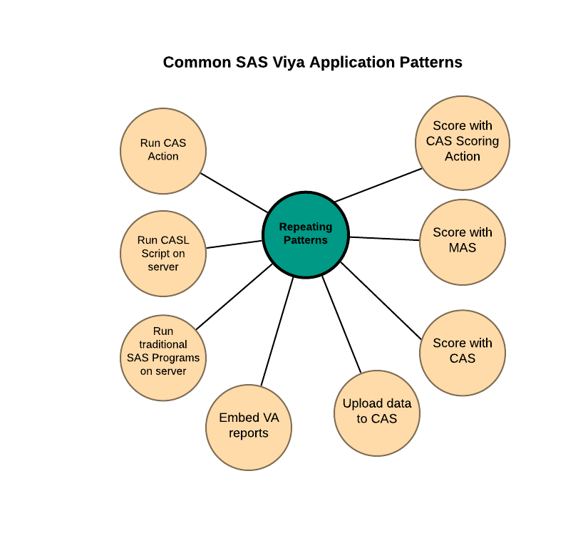

Documentation for @sassoftware/restaf, @sassoftware/restaflib and @sassoftware/restafedit
Current version
The current version is tagged as next. Do not use latest.
Installation
To install in a nodejs application use npm or yarn as shown below
npm install @sassoftware/restaf@next
In html you use script tag as shown below. The global variables are restaf,restflib and restafedit
<script src="https://unpkg.com/@sassoftware/restaf@next"></script>
restaf- Building Applications with SAS REST API made simple
SAS® Viya® is like a Swiss Army knife when it comes to allowing all types of clients to talk to it—Java, Python, Lua, R, and, of course, SAS®. In addition to using these language-based APIs, SAS also publishes APIs that conform to REST best practices. The well-designed APIs in SAS Viya make it relatively easy to build complex web and non-web applications with SAS Viya as the engine of your application. The applications can be solely based on SAS Viya capabilities or users can do a mashup of the advanced SAS Viya analytics with their other products and capabilities. restaf is a light-weight, UI-framework agnostic, JavaScript library designed to be easy-to-use for app developers. restaf takes advantage of the consistency of the REST APIs to reduce the responses from the server into a standard form, and it also manages the data on the client side. This reduction enables developers to interact with the server in a repeating pattern regardless of which service the application is using.
Use restaf to exploit SAS® Cloud Analytic Services (CAS), compute server, SAS® Visual Analytics, and other key capabilities of SAS Viya in a very consistent manner with minimal coding.
Please visit this links for more details.

restaflib - Making application development even easier
restafedit is a companion library to restaf. It purpose is to further simplify the development of applications for SAS Viya by providing higher level api for SAS Viya. restaflib is basically a wrapper around restaf.
Please visit this links for more details.
restafedit - Library to simplify editing data in Viya
Going back in history, SAS had products like SAS/FSP and SAS/AF that allowed users to create simple or complex interactive applications. As SAS moved to the Viya platform these products were dropped. SAS provided REST API (application programming interfaces) as an industry standard way for creating applications.
The key component of these applications is entering data. Common destinations of the modified data ARE:
-
The client application
-
Custom code on a Viya
- Compute server
- CAS (Cloud Analytic Server) server
- MAS (Micro Analytic Score)
- Other SAS services that can be accessed via REST API
-
Some external servers
- Azure App running a SAS Decision using SAS Container Runtime (SCR)
- Others...
Please visit this links for more details.
A sample application is here.
A react library that simplifies developing data entry with react is here